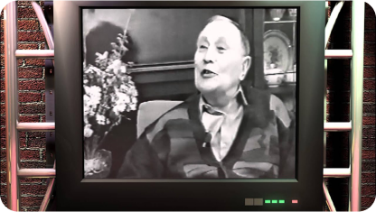

БАСТЫ БЕТ
Әлімхан Ермековтың
туған туысымен сұхбат
ӨМІРБАЯНЫ
Әлімхан Әбеуұлы Ермеков (1891, Қарқаралы уезі, Семей облысы, - 22 маусым 1970, Қарағанды) — мемлекет және қоғам қайраткері, Алашорда үкіметінің мүшесі, математика саласынан тұңғыш қазақ профессоры.
Балалық шағы
Әлімхан Ермеков 1891 жылы осы күнгі Қарағанды облысы, Ақтоғай ауданы, Бөріктас деген жерде дүниеге келеді. Әкесі Әбеу халыққа қадірлі, озық ойлы, орысша сауаты бар, өз дәуіріндегі зиялылардың бірі болған. 1899 жылы Қарқаралыдағы қалалық училищеге оқуға түседі. Мектеп қабырғасында зейінді, алғыр болған Әлімхан мектепті үздік бітіріп, 1905 жылы Семейдегі ерлер гимназиясына түседі. Осы оқу орнын 1912 жылы алтын медальмен бітіріп, Томск технология институтының тау-кен факультетіне қабылданады.
Томскідегі оқуы
Томскте оқып жүріп орыстың озық ойлы ойшылдарымен, ғалымдарымен танысады. Шоқан Уәлихановтың досы Григорий Николаевич Потанин Әлімханның бойындағы білімге деген талпынысты көріп, тәнті болады. Қарт Потанин Әлімханға ағалық ақыл беріп, оған: «Әлімхан сенің білімің - ол қазақтың білімі. Сол себепті жақсы оқы және өзгелерді оқыт» - деп, үлкен үміт артқан. Осы сөздерді Әлімхан аға өмірлік ұстанымына айналдырып, ақтық демі қалғанша ұлтымызға еңбек етті. Григорий Потанин Ермековке бекер назар аудармағанын уақыт дәлелдеді. Әлімхан Ермеков өз қолымен толтырған анкетарларда ағылшын, неміс, француз, итальян тілдерін білетінін көрсеткен. Қызметтес болған, шәкірт болған және Әлімхан Ермековпен өмір жолы тоғысқан тұлғалардың барлығы дерлік Әлімхан жайында жылы лепес білдірген. Терең білімді, көркем-мінезді Әлімхан Ермековтың замандасы Сұлтанмахмұт келесі өлең жолдарын арнаған: Әлімхан Ермекұлы жас жігіттен, Келеді екінші болып бұл ретпенен. Қазақта мұндай жігіт көрмедім, - деп, Ардақты қарт Потанин лепес еткен. Томдағы инженерлік сабағында, Жетеді біл жылдан соң тамамына. Өткізбекші өмірін ілім үстінде, Бір түрлі биіктік бар талабында. Сөйлеп кетсе, қозғалар бойда жаның, Тас болса да ерітер жүрек қанын. Шындығы, тереңдігі, әділдігі, Тусаң ту осылай, - дегізер жанның бәрін. Адалдық, ақжүректік, ақтығына, Бір ауыз қарсы айта алмай құрыды әлің. Меніңше Ермеков - деген бала, Ұқсайды ұшқыр қыран қаршығаға. Сөз, білімін сынайтын жер ілгері, Әзір адал кісі ғой, жеке дара.
Алаш қозғалысы
Патша өкіметі құлатылғаннан кейін елдегі қалыптасқан жағдайды айқындап, алда не істеу керектігін шешіп алу үшін жер-жерде қазақ съездері ашылып жатты. Ә.Ермеков, алғаш рет саяси іске алаш қозғалысына, 1917 жылы 27 сәуір, 7 мамыр аралығында өткен Семей облыстық қазақ съезіне қатысады. Онда ол басқа да адамдармен бірге съезд президиумының хатшылығына, одан кейін съезд шешімімен Семей облыстық қазақ комитетінің мүшелігіне сайланады. Әмбе ол, қазақтар жағынан Халел Ғаббасов екеуі Семей облыстық атқару комитетінің төрағасының орынбасары болады. Шілде айындағы жалпықазақтық съезде Семей облысынан Бүкілресейлік құрылтай жиналысына депутаттыққа ұсынылады. 1917 жылы 8-17 қазанда 1-Сібір облыстық съезіне, делегаттар жиналысы атынан қатысады да, оның президиумына Семей облысынан кіреді. Съезде Сібір автономиясының негізгі заңын жазатын комитет құрылып, оған қазақ делегаттары Ә.Ермековті кіргізеді. Міне, алаш жолындағы көптеген саяси істерге қатысып, шыңдалған Әлімханды «Қазақ» газеті «Технологический институтқа асқан зеректер ғана түседі. Әлімхан білімді, шешен, өткір, халыққа қызмет етуді өзіне парыз санаған жігерлі жас азамат», — деп сипаттайды. Осындай жан-жақты дарын иесі жас сұңқардың желтоқсанда өткен жалпы қазақ съезінде Алашорда үкіметінің мүшелігіне өтуі таңғажайып емес еді. Әмбе ол, «Алаш» партиясының Семей облыстық комитетінің мүшесі де болатын. Әлихан Ермековтің тарихи зор еңбегінің бірі — Қазақ автономиясы шегарасының біртұтастығын жанқиярлықпен қорғауы. Осы орайда ол 1920 жылы 17 тамызда Лениннің төрағалығымен өткен қазақ өкілдері қатысқан Халық комиссарлары кеңесінің мәжілісінде Қазақ автономиясы туралы мәселе қаралғанда, Қазақстанның жағдайы туралы Ә.Ермеков баяндама жасайды. Онда ол жер, Қазақстанның шегарасы туралы мәселелерді қамтып, өктемшіл, озбыр, отаршылдық пиғылдағы өкілдермен қызу айтысқа түсіп, өз пікірін тиянақты, жан-жақты, бұлтартпас дәлелдермен қорғап шығады. Окупанттар өз кінәсін мойындап, нәтижесінде, кезінде қазақтардан тартып алынған Каспийдің теріскей жағалауындағы ені бір шақырымдық және Ертістің сол жағалауындағы он шақырымдық ұлан-ғайыр жер Лениннің тікелей қолдауымен Қазақ еліне қайтарылады.
Кеңес Үкіметі
Қазақ автономиясын құруда Ә.Ермековтің өлшеусіз еңбегін зерделей отырып, онан кейінгі жасампаздық жолдары Қазақ елінің шаруашылық жайын қалыптастырып, нығайтуға халықты ағарту сияқты нақты істерге бағытталғандығына көз жеткіземіз. Қарқаралыда мектеп ашады, Ташкент пен Алматыдағы жоғары оқу орындарында математикадан дәріс оқиды. «Ұлы математика курсы» 1-бөлім (1935), «қазақ тілінің математика терминдері» (1936) атты оқулық, кітаптарды жарыққа шығарады. Қазақ арасынан тұңғыш математика ғылымының профессоры атағын алады. Сонымен бірге нағыз білім мен біліктілікті қажет ететін сала — Халық шаруашылығын жоспарлау комитетінде және басқа да жауапты қызметтерде болады. 1929-1930 жылдары бір топ қазақ зиялылары абақтыға алынып, тергеуге түскенде, Ә.Ермековті де түрмеге қоса қамайды. Алаш ісінің мүлдем құртылып, ұрпақтық сабақтастық үзіліп қалмау және ұлт зиялылары болашақты ойлап, Алаштың жас түлек дарындары М.Әуезов пен Ә.Ермековті сақтап қалу мақсатында олар, «кінәларын мойындап» сол жолы бостандыққа шығады. Алайда 1937 жылғы қара бұлт Ә.Ермековтің басына тағы да үйіріліп, 1939 жылы сотталып, 1947 жылға дейін түрмеде отырып шығады. Түрмеден шыққаннан кейін жаламен қайта ұсталып, 1958 жылы босайды. 1957 жылы 26 қарашада толық ақталып, Қарағанды Мемлекеттік техникалық университетінде математикадан дәріс оқиды. 1970 жылы қайтыс болады.
ВИДЕОРОЛИКТЕР
-

- 
БІЗ ТУРАЛЫ
-
Сайт жасаушысы
Ахмет Мұхаммедали
+7 771 905 4011 -
Жетекшіcі
Төреш Жалынбек
+7 702 764 5848